비서-1급 (2019-05-13 기출문제)
1과목: 비서실무
1. 상사가 외부 행사에 참석할 예정이다. 그런데 지금 행사장 앞에서 행사를 반대하는 시위가 있다. 이 때 전문비서로서의 역할로 가장 적절하지 않은 것은?
- 상사에게 상황을 보고하고 행사 참석 여부를 결정해 줄 것을 상사에게 부탁한다.
- 상사가 행사에 참석하는 것이 좋을지 아니면 다른 사람이 대신 참석하는 것이 좋을지 상사가 결정할 수 있도록 시위 관련 정보를 신속히 보고한다.
- 상사가 참석하지 못할 경우 행사에 어떤 불이익이 있을지에 대해 행사 담당자와 논의한다.
- 상사가 참석하지 못할 경우 상사 대신 누가 참석하는 것이 좋을지에 대해 상사와 논의한다.
(정답률: 33%)

2. 의사소통자로서 비서의 자기개발로 가장 적절하지 않은 것은?
- 상사의 관심분야에 대한 정보를 가능한 많이 수집한다.
- 상사에게 전달되는 정보의 정확성을 분석한다.
- 상사에게 직접 보고하는 회사 임원진들과 원활한 의사소통을 할 수 있도록 임원진의 소속 부서의 상황을 면밀히 파악하려고 노력한다.
- IT나 Mobile 기기를 능숙하게 사용할 수 있는 능력을 함양한다.
(정답률: 49%)
3. 비서를 통하지 않고 주요 인사가 직접 전화를 하여 상사와 통화를 원한다. 상사는 현재 통화 중이라고 말씀드리자 기다리겠다고 한다. 이 때 비서의 업무 수행으로 가장 적절한 것은?
- 주요 인사가 기다리는 것은 예의에 어긋나므로 상사가 통화를 마치는대로 바로 전화를 드리겠다고 말씀드리고 전화번호를 받아 둔다.
- 상대방이 기다리는 동안 상대방과 관련된 최근 소식, 예를들어 최근 신문 인터뷰 기사 잘 보았다 등을 언급하며 상대방에 대한 관심을 표현해도 좋다.
- 상사의 통화가 길어져서 상대방이 계속 기다려야 할 경우 전화를 건 상대방에게 상황을 말씀드리고 계속 대기할지 여부를 다시 확인한다.
- 통화 중인 상사의 집무실로 즉시 들어가서 말씀드리고 통화하실 수 있도록 한다.
(정답률: 66%)
4. 우리 회사는 미국에 본사를 두고 있는 다국적 기업이라 본사에서 오는 손님이 많은 편이다. 이번에 미국에서 2명의 남자 임원과 1명의 여성 임원이 우리 회사를 방문하였다. 외국인 내방객 응대 시 비서의 업무자세로 가장 적절한 것은?
- 본사 현관 입구에 환영 문구를 적을 때 이름 알파벳 순서로 배치하였다.
- 차 대접을 할 때는 선호하는 차의 종류를 각 손님에게 여쭈어 본 후 내ㆍ외부인사의 직급 순으로 대접하였다.
- 처음 인사를 할 때는 Mr. Ms. 존칭 뒤에 full name을 넣어 불렀다.
- 처음 인사를 나눈 후에는 친근감의 표시로 first name을 불렀다.
(정답률: 53%)
5. 국제상사 영업부에 근무하는 나애리는 홍길동 전무의 비서이다. 아래의 상황을 읽고 비서의 업무 처리로 가장 적절한 것은?
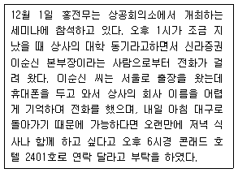
- 상사는 12월 1일 하루 종일 세미나에 참석한 후 저녁 식사까지 있어서 이순신 본부장을 만날 수 없다고 판단되어 이순신 본부장에게 저녁식사가 어려울 것 같다고 말한다.
- 이순신 본부장이 휴대폰이 없는 상황이므로 상사의 핸드폰 번호를 알려주고 세미나 끝나는 시간에 연락할 수 있도록 한다.
- 세미나중인 상사에게 문자 메시지를 보내어 이순신 본부장으로부터의 메시지와 호텔번호를 알려준다.
- 상사가 세미나 중이므로 상공회의소 세미나 담당자에게 연락해둔다.
(정답률: 62%)
6. 나이가 어느 정도 드신 손님이 찾아와 상사가 지금 있는지를 비서에게 물어봐서 부재중이라고 했더니 그냥 가려고 하였다. 비서가 이름과 용건을 남겨달라고 했더니, 괜찮다고 다음에 다시 오겠다고하였다. 이 경우 가장 적절한 응대법은?
- 다음에 오실 때는 사전 예약을 하고 오시라고 말씀드리고 친절하게 배웅을 했다.
- 메모지와 봉투를 손님에게 주면서 이 안에 성함이라도 적어 봉투에 넣어 밀봉해 주시면 전달해 드리겠다고 하였다.
- 손님이 굳이 알리고 싶어하지 않으므로 그냥 가시게 하였다.
- 상사에게 지금 전화 연결을 해 드린다고 적극적인 자세를 취하였다.
(정답률: 67%)
7. 상사는 다음 주에 주요 인사들이 참석하는 저녁 식사에 초대를 받았다. 이 모임을 준비하는 비서의 자세로 가장 적절하지 않은 것은?
- 모임의 성격, 참석자들의 특성 등을 확인하여 상사에게 사전에 보고한다.
- 모임 주최자에게 우리 회사 및 상사와 관련된 최근 인터뷰 기사를 보내 상사가 모임에서 빛날 수 있도록 한다.
- 모임에서 내 상사의 역할이 무엇인지 확인한 후 필요한 자료 등을 준비한다.
- 상사와 같은 테이블에 앉는 사람들이 누구인지 사전에 확인한다.
(정답률: 76%)
8. 상사의 출장 후 업무처리에 관한 내용이다. 가장 부적절한 것은?
- 출장보고서 제출 마감일과 보고 대상을 확인한다.
- 출장보고서에는 출장 기간, 출장 지역, 출장 목적, 출장 업무내용 등을 포함시킨다.
- 출장경비 정산서를 기한 내에 관련 부서에 제출한다.
- 출장보고서를 업무 관련자들에게 참고용으로 배포한다.
(정답률: 74%)
9. 다음의 회의용어에 대한 설명 중 바르지 않은 것은?
- 동의 : 의결을 얻기 위해 의견을 내는 일, 또는 예정된 안건 이외의 내용을 전체 회의에서 심의하도록 안을 내는 것
- 의안 : 회의에서 심의하기 위해 제출되는 안건
- 정족수 : 회의를 개최하는 데 필요한 최소한의 출석 인원수
- 의결 : 몇 개의 제안 가운데서 합의로 뽑는 것
(정답률: 37%)
10. 상사가 출장 중일 때 주요한 거래처의 결혼식이 있다. 이 때 비서의 가장 올바른 업무처리는?
- 출장 후 상사가 직접 연락하도록 결혼식 알림 내용을 보관해 둔다.
- 결혼식 일자가 상사 출장 일정과 겹친 경우이므로 그냥 지나가도 무방하다.
- 대리 참석할 사람을 미리 알아보아 상사에게 보고한다.
- 상사에게 축의금, 화환 등을 보낼지, 대리인을 보낼지 등을 문의한 후 처리한다.
(정답률: 76%)
11. 일정을 자주 변경하는 상사를 보좌하는 비서의 자세로 가장 적절하지 않은 것은?
- 막판에 일정을 변경 및 취소해야 할 경우를 대비해 즉각 연락해야 할 사람과 전화번호를 정리해 둔다.
- 일정을 수없이 바꾸더라도 비서는 상사를 보좌하는 데에 전념해서 상사가 일정 변경으로 어려움을 겪지 않도록 보좌한다.
- 일정의 변경으로 상사의 대내외 신뢰도가 낮아지고 있음을 상사에게 말씀드려 상사가 일정을 변경하지 않도록 보좌한다.
- 상사는 업무가 바빠 일정을 모두 잘 기억하기 어려우므로 일정을 자주 상기시킨다.
(정답률: 69%)
12. 예약 업무를 수행하는 비서의 자세로 적절하지 않은 것은?
- 모임의 성격에 맞는 장소를 추천할 수 있도록 다양한 장소에 대해 정보를 수집한다.
- 좋은 음식점을 많이 알아두는 것이 비서업무에 도움이 되므로 음식점 블로그 등에 나와 있는 음식점들의 특징이나 장단점을 정리해 둔다.
- 골프 모임이 잦은 상사를 위해 골프장 예약 담당자들에게 연말에 회사 홍보용 선물을 보낸다.
- 예약을 변경하거나 취소할 경우 위약금이나 벌점 등 불이익이 있는지 미리 확인한다.
(정답률: 69%)
13. 회사 20주년을 축하하는 기념식 행사를 준비하는 비서가 의전계획을 수립할 때 다음 중 가장 적절하지 않은 것은?
- 만찬 음식 선정 시 특정 음식을 꺼리는 손님에 대해서는 별도메뉴를 준비한다.
- 비서는 행사에서 상사의 역할을 미리 확인한 후 필요한 업무를 준비한다.
- 행사 당일에는 내외빈의 동선 및 좌석을 확인하여 안내에 실수가 없도록 한다.
- 주요 참석자의 프로필을 미리 작성해 둔다.
(정답률: 41%)
14. 다음 한자에 대한 설명이 잘못된 것은?
- 決濟 : 일을 처리하여 끝냄
- 決裁 : 상사가 부하가 제출한 안건을 검토하여 허가하거나 승인함
- 榮轉 : 좋은 장소로 이전함
- 華婚 : 다른 사람의 혼인을 아름답게 부르는 말
(정답률: 43%)
15. 다음은 공식 행사에 참석하는 상사를 보좌하는 비서의 업무 내용이다. 가장 적절하지 못한 것은?
- 공식 행사에 초대받은 상사를 위해 드레스코드(dress code)에 맞는 의상이 무엇인지 인터넷으로 검색한 사진을 인쇄해드렸다.
- 공식 만찬에 초대받은 상사를 위해 주최 측에 연락하여 상사의 좌석이 어디인지 확인한 후 보고한다.
- 신원 확인 후 출입이 가능하다고 연락을 받은 경우, 늦어도 공식 행사 시작 시간 1시간 전에는 도착하도록 일정을 잡는다.
- 식사 중간에 이동이 가능하지 않으므로 만찬 종료 이전에 다른 일정은 잡지 않았다.
(정답률: 57%)
16. 다음의 의전 설명 중 가장 바르게 제시된 것을 고르시오.
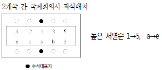
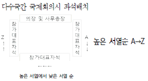
- 비행기에서 상석은 비행기 종류에 따라 다르지만 최상석은 비행기 내부에서 보았을 때 앞쪽으로부터 왼쪽열 첫 번째 창가좌석으로 보는 경우가 많다.
- 승강기에서 상석은 들어가서 오른쪽의 안쪽, 즉 내부에서 보면 왼쪽 안쪽이며, 상급자가 먼저 타고 먼저 내리는 것이 원칙이다.
(정답률: 50%)
17. 신문 기사 작성법으로 적절하지 않은 것은?
- 두괄식 또는 역피라미드 방식으로 중요한 것부터 차례로 작성한다.
- 주 제목은 핵심 내용으로, 부제목에는 사람들의 관심을 끌수 있는 제목을 뽑아야 한다.
- 표, 그래프, 사진 등 필요한 자료를 준비한다.
- 기사 끝에는 반드시 자료 작성자나 문의처를 적는다
(정답률: 60%)
18. 업무추진비 등 비서실의 예산관리 업무 수행 방법으로 적절하지 않은 것은?
- 상사의 업무추진비 정산 시 비서는 업무추진 결과도 보고해야 한다.
- 업무추진비는 집행 목적, 일시, 장소, 집행 대상 등을 증빙서류에 기재해야 한다.
- 비서실에서 사용되는 경비 등 예산 지출에 대해서는 사소한 것이라도 예산 수립 목적에 맞게 사용될 수 있도록 꼼꼼히 관리해야 한다.
- 업무추진비는 기관의 장 등이 기관을 운영하고 정책을 추진하는 등 업무를 처리하는 데 사용되어야 한다.
(정답률: 54%)
19. 다음은 경조사와 관련하여 비서가 알아야 할 용어들이다. 용어에 대한 설명이 바르지 않은 것은?
- 발인(發靷): 장례에서 사자가 빈소를 떠나 묘지로 향하는 절차
- 단자(單子): 부조나 선물 등의 내용을 적은 종이. 돈의 액수나 선물의 품목, 수량, 보내는 사람의 이름 등을 써서 물건과 함께 보낸다.
- 부의(賻儀): 부조금 봉투, 선물 포장지나 리본, 축전 등에 기록하는 문구
- 호상(護喪): 상례를 거행할 때 처음부터 끝까지 모든 절차를 제대로 갖추어 잘 치를 수 있도록 상가 안팎의 일을 지휘하고 관장하는 책임을 맡은 사람.
(정답률: 38%)
20. 회의 진행시 새로운 안건을 위한 의사 진행순서로 바르게 나열된 것을 고르시오.
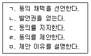
- ㄴ-ㅁ-ㄷ-ㄹ-ㄱ
- ㅁ-ㄹ-ㄴ-ㄷ-ㄱ
- ㄴ-ㄹ-ㄷ-ㄱ-ㅁ
- ㄱ-ㄴ-ㅁ-ㄷ-ㄹ
(정답률: 42%)
2과목: 경영일반
21. 김OO 비서는 입사후 비서로서 경영현황 지식을 갖추기 위해 다음과 같은 활동을 하였다. 가장 거리가 먼 행동은?
- 조직의 재무제표를 수집하여 분석하였다.
- 기업의 경영관련 모든 루머를 수집해서 바로 상사에게 보고하였다.
- 기업에서 생산되는 제품과 서비스에 대한 정보를 수집하여 공부하였다.
- 기업의 경영이념을 숙지하여 업무에 적용하였다.
(정답률: 71%)
22. 다음 중 특성 산업 내의 경쟁 강도에 대한 설명으로 가장 적절하지 않은 것은?
- 진입장벽이 낮은 산업일수록 경쟁이 치열하다
- 산업성장률이 높은 경우는 성장률이 낮은 경우보다 경쟁이 치열하다.
- 시장점유율이 비슷한 경우 경쟁이 치열하다.
- 대체재의 수가 많은 경우 경쟁이 치열하다.
(정답률: 53%)
23. 다음 중 정관에 특별한 계약이 없는 한 전원이 공동출자하여 무한책임을 지므로 신뢰관계가 두터운 가족이나 친지 간에 이용되는 기업형태는 무엇인가?
- 합자회사
- 합명회사
- 익명조합
- 주식회사
(정답률: 59%)
24. 기업들은 글로벌시장에서 경쟁하기 위해 다양한 전략을 구사한다. 다음의 내용을 읽고 어떤 전략을 설명한 것인지 가장 가까운것을 고르시오.
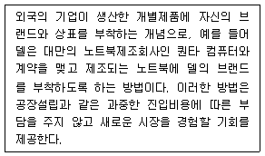
- 라이선싱(licensing)
- 프랜차이징(franchising)
- 위탁제조(contract manufacturing)
- 해외자회사(foreign subsidiaries)
(정답률: 50%)
25. 다음 중 기업의 인수∙합병(M&A)에 관한 설명으로 가장 적절하지 않은 것은?
- 투자자본과 운전자본 소요액이 증가하여 기업의 재무구조가 악화될 우려가 있다.
- 원가가 절감되는 규모의 경제성을 기대할 수 있으며 특히, 수직적 M&A의 경우 영업효율성이 증대될 수 있다.
- 상이한 성격의 기업끼리 M&A를 하면 분산투자에 의한 위험분산의 이점이 있다.
- 수평적 M&A의 경우 시장점유율 확대로 지배적 위치를 확보할 수도 있다.
(정답률: 38%)
26. 다음 중 대기업의 특성에 대한 설명으로 가장 옳은 것은?
- 대기업은 수평적 조직으로 조직이동 등의 유연한 관리가 가능한 유기적 조직이다.
- 대기업은 경기 침체기에 가장 먼저 위상이 흔들리고 경기성 장기에 쉽게 살아난다.
- 아웃소싱을 다양화함으로써 기업전체의 비용절감과 사업다각화가 가능하다.
- 대기업은 수요량이 적은 틈새시장 공략에 유리하다.
(정답률: 62%)
27. 다음은 주식회사에 대한 설명이다. 옳지 않은 것은?
- 주식회사는 투자자와 별개의 법적 지위를 갖는 법인이다.
- 주식회사의 투자자는 회사가 파산하거나 손해를 보아도 자신이 출자한 지분에 대해서만 책임을 진다.
- 주식회사의 설립과 청산은 상대적으로 복잡하나 법적 규제는 약한 편이다.
- 주식회사는 많은 사람들로부터 출자를 유도할 수 있어 거대자본으로 회사운영이 가능하다.
(정답률: 58%)
28. 다음 중 경영의 기본 관리기능에 대한 설명으로 가장 적절하지 않은 것은?
- 계획화는 조직의 목표를 세우고 이를 달성하기 위한 방법을 찾는 일종의 분석과 선택의 과정을 말한다.
- 조직화는 조직목표를 달성하기 위해 요구되는 업무를 수행하도록 종업원들을 독려하고 감독하는 행위를 말한다.
- 통제화는 경영활동이 계획과 부합되도록 구성원의 활동을 측정하고 수정하는 기능이다.
- 조정화는 이해와 견해가 대립된 제 활동과 노력을 결합하고 동일화해서 조화를 기하는 기능이다.
(정답률: 51%)
29. 다음의 괄호에 들어가는 말을 순서대로 열거한 것을 고르시오.
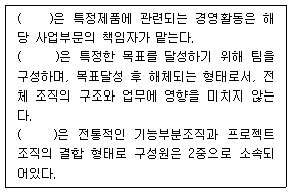
- 사업부제조직-프로젝트조직-매트릭스조직
- 사업부제조직-매트릭스조직-결합조직
- 라인스탭조직-프로젝트조직-매트릭스조직
- 라인스탭조직-매트릭스조직-결합조직
(정답률: 60%)
30. 의사결정 유형은 수준과 범위에 따라 전략적-관리적-업무적 의사결정으로 분류한다. 다음 중 의사결정 유형에 대한 설명으로 가장 적절하지 않은 것은?
- 전략적 의사결정은 주로 기업내부에 관한 의사결정으로, 의사결정에 필요한 능력으로는 기업 내부의 부문 간 조율을 위해 대인관계능력이 강조된다.
- 관리적 의사결정은 주로 중간경영층에서 이루어지고 최적의 업적능력을 내도록 기업의 자원을 조직화하는 것과 관련이 있다.
- 업무적 의사결정은 주로 하위경영층에 의해 이루어지고 생산, 마케팅, 인사 등과 관련한 일상적으로 이루어지는 의사결정을 포함한다.
- 업무적 의사결정을 하는 데 필요한 능력으로 업무의 문제를 발견하고 해결하는 기술적 능력이 있다.
(정답률: 42%)
31. 다음 중 동기부여이론에 대한 설명으로 가장 옳지 않은 것은?
- 알더퍼(Alderfer)의 ERG이론은 인간의 욕구는 존재욕구 - 관계욕구 - 성장욕구로 분류한다.
- 허쯔버그(Herzberg)의 이요인이론(two factor theory)에 의하면, 임금 인상이나 작업환경 개선으로는 종업원의 만족도를 높일 수 없다.
- 아담스(Adams)의 공정성 이론(equity theory)은 욕구를 5단계로 분류하여 하위에서 상위욕구까지를 설명한 과정이론이다.
- 브룸(Vroom)의 기대이론은 직무수행을 위한 구성원의 노력에서 보상까지의 과정에 있어 동기유발을 이해하기 위한 접근방법이다.
(정답률: 43%)
32. 다음 중 리더십이론의 설명으로 가장 옳지 않은 것은?
- 특성이론은 가장 오래된 이론으로 성공적인 리더들은 타인과 다른 개인적 특성을 가지고 있으며, 이는 선천적으로 태어난다는 이론이다.
- 행동이론은 리더의 행동양식에 초점을 맞춘 것으로 리더의 행동이 구성원에게 만족도와 생산성에 영향을 준다는 이론이다.
- 상황이론은 상황에 따라 바람직한 유형의 리더가 달라진다는 이론이다.
- 변혁적 리더십은 오직 상사의 막강한 권력만이 부하를 변혁시킨다는 이론이다.
(정답률: 65%)
33. 다음 중 가격관리에 대한 설명으로 가장 적절하지 않은 것은?
- 초기고가격전략은 신제품의 도입 초기에 높은 소득층의 구매력을 흡수하기 위해 높은 가격을 설정하는 전략을 말한다.
- 가격결정에서 제품의 원가는 가격 결정의 하한선이 된다.
- 수요중심 가격결정은 제품단위당 원가와 경쟁사의 제품가격을 기준으로 가격을 결정하는 방법이다.
- 고객의 제품에 대한 가치 지각은 가격 결정의 상한선이 된다.
(정답률: 42%)
34. 기업회계 기준에 의한 손익계산서를 작성할 때 배열 순서로 가장 올바른 것은?
- 매출총수익 - 당기손순익 - 영업손익 - 특별손익
- 매출총수익 - 특별손익 - 당기손순익 - 법인세차감후손순익
- 매출총수익 - 영업손익 - 법인세차감전손순익 - 당기순손익
- 매출총수익 - 특별손익 - 영업손익 - 당기순손익
(정답률: 47%)
35. 다음 중 기업이 보상수준을 결정할 때 중요하게 고려해야 할 요인에 대한 설명으로 가장 적절하지 않은 것은?
- 보상수준은 기본적으로 종업원의 생계를 보장할 수 있는 수준이 되어야 한다
- 보상수준은 기업의 지불능력 한도 내에서 결정되어야 하며 지불능력에 따라 임금수준의 하한선이 결정된다.
- 정부의 최저임금제도나 노동력의 수급상황 등과 같은 환경적 요인도 보상수준을 결정하는 데 영향을 미친다.
- 임금관리의 공정성을 확보하기 위하여 동종업계의 임금 수준을 조사할 필요가 있다.
(정답률: 48%)
36. 기업의 신용등급 및 평가와 관련된 설명으로 옳지 않은 것은?
- 신용평가는 기업의 사업전망, 재무분석 등을 실시하여 평가한다.
- 신용등급은 돈을 빌려쓰고 약속한대로 갚을 수 있는 능력을 평가하여 상환 능력의 정도를 기호로 표시한 것이다.
- 기업이 금융기관에서 돈을 빌리고자 할 때 신용등급이 크게 영향을 주지는 않는다.
- 신용도를 조사·분석하여 평가하는 것을 전문으로 하는 신용평가회사가 있다.
(정답률: 70%)
37. 브릭스(BRICS)는 2000년대를 전후해 경제성장 가능성이 높은 신흥경제국 5개국을 하나의 경제권으로 묶어 지칭하는 용어이다. 매년 정상회담을 개최하여 브릭스 회원국간의 상호 경제협력을 강화하는 움직임을 이어가고 있다. 다음의 국가 중 브릭스(BRICS)의 회원국이 아닌 국가는?
- 러시아
- 중국
- 남아프리카공화국
- 멕시코
(정답률: 50%)
38. 다음 중 인적자원관리 기능프로세스 중 가장 거리가 먼 것은?
- 확보관리
- 스카웃관리
- 평가관리
- 개발관리
(정답률: 44%)
39. ( A )는 저소득층의 소득증가가 결과적으로 국가전체의 경기부양으로 이어진다는 경제용어이다. 이는 저소득층의 소득수준이 올라가면 총 소비가 늘어나고, 기업측면에서는 생산 투자할 여력이 많아지기 때문에 경기가 활성화돼 부유층의 소득도 높아진다는 것이다. 이는 부유층으로부터 세금을 더 걷어 저소득층의 복지정책을 늘리자는 정책과 상통한다. 여기서 ( A )를 뜻하는 용어는 무엇인가?
- 낙수효과
- 낙타효과
- 분수효과
- 풍선효과
(정답률: 49%)
40. 다음 중 전사적자원관리(Enterprise Resource Planning: ERP)에 대한 설명으로 가장 적절하지 않은 것은?
- 기업의 경쟁력강화를 위해 부서별로 분산되어 있고 유기적으로 연결되어 있지 못한 자원을 서로 연결하는 시스템이다.
- ERP의 목적은 기업의 모든 자원을 공유함으로써 자원의 효율화를 추구한다.
- 최근 ERP솔루션은 클라우딩 컴퓨팅 기반으로 빠르게 전환하고 있는 추세이다.
- ERP는 반드시 기업 스스로가 독자적으로 개발해야만 하기때문에 비용과 기술로 인하여 대기업에서만 개발하여 사용할 수 있는 시스템이다.
(정답률: 69%)
3과목: 사무영어
41. Choose one that does NOT match each other.
- IOW : In other words
- ROI : Return on Interest
- NRN : No reply necessary
- YOLO : You only live once
(정답률: 50%)
42. Ms. Han's company needs to import some fibers from a foreign company. After examining the advertisements in the magazine, Ms. Han wants to get more information. Whom does she have to contact?
- credit manager
- sales manager
- HR manager
- public relations manager
(정답률: 40%)
43. Belows are sets of English sentence translated into Korean. Choose one which does NOT match correctly.
- Thank you for your hard work. -> 당신의 노고에 감사드립니다.
- On behalf of my boss, I am here to sign the contract. -> 사장님을 대신해서 제가 계약서 사인을 하러 왔습니다.
- I forgot to attach the file in my email. -> 제 이메일에 파일을 첨부했던 것을 깜박했습니다.
- We are running out of time. -> 우리는 시간이 얼마 없습니다.
(정답률: 47%)
44. Which of the following is the MOST appropriate expression for the blank?
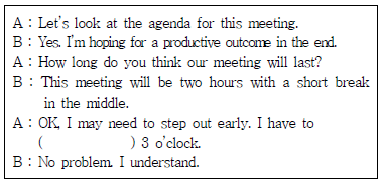
- leave a phone call by
- call an important phone of
- take an important phone call on
- make an important phone call at
(정답률: 41%)
45. Which is INCORRECT about the following letter?
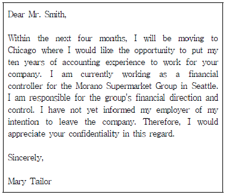
- Mary wants to move into another company.
- Mr. Smith is a HR manager.
- Mary wants to move to Chicago.
- Mary quit her job temporarily to apply for another company.
(정답률: 43%)
46. What is MOST proper as a closing of the letter?
- I'm writing to apologize for the wrong order we sent.
- Thank you for your quick reply.
- I'm looking forward to hearing from you soon.
- I have received your letter of May 1st.
(정답률: 49%)
47. Which is INCORRECT about the letter?
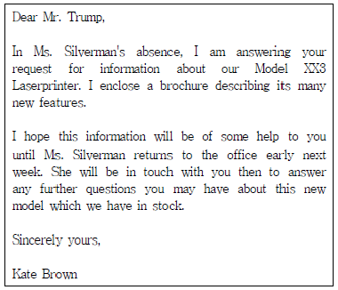
- Mr. Trump asked for the information about Model XX3 Laserprinter before.
- Next week, Ms. Silverman will answer to Mr. Trump directly.
- Kate Brown is a buyer of the Laserprinter.
- This is a reply to the inquiry.
(정답률: 47%)
48. According to the following invitation, which is NOT true?
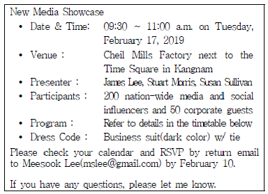
- 이 New Media Showcase 행사에는 250명의 주요 인사들이 참석한다.
- 행사 참석 복장은 넥타이를 착용한 짙은 색의 정장 차림이다.
- 행사 참석 여부는 행사일 1주일 전까지 담당자에게 이메일로 알려야 한다.
- 행사 프로그램은 행사 당일 제시된다.
(정답률: 55%)
49. According to the followings, which is NOT true?
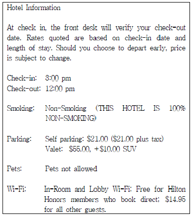
- If you check-out the hotel early in the morning, the room rate can be changed.
- Dogs & pets are not allowed at the hotel.
- Self parking charge is cheaper than Valet parking charge.
- Every hotel guest can use free Wi-Fi at the lobby.
(정답률: 52%)
50. Which of the following is the MOST appropriate expression for the blanks ⓐ, ⓑ and ⓒ?
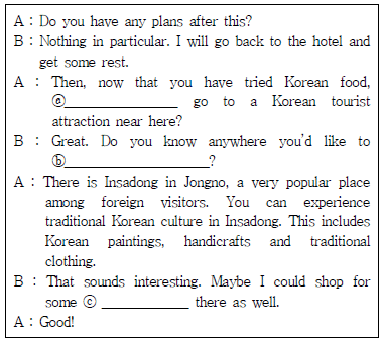
- ⓐ how do you, ⓑ suggest, ⓒ gift wrap
- ⓐ why do you, ⓑ propose, ⓒ valuable
- ⓐ why don’t we, ⓑ recommend, ⓒ souvenirs
- ⓐ when do you, ⓑ notify, ⓒ product
(정답률: 54%)
51. According to the following dialogue, which is NOT true?
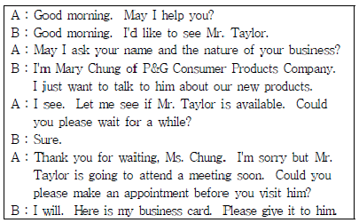
- Ms. Chung belongs to P&G Consumer Products Company.
- Mr. Taylor can't meet Ms. Chung because of his schedule.
- Ms. Chung didn't want to introduce herself to Mr. Taylor.
- Ms. Chung visited Mr. Taylor's office without appointment.
(정답률: 54%)
52. Belows are sets of English sentence translated into Korean. Choose one which does NOT match correctly.
- We've run into some problems with the project. -> 프로젝트가 몇가지 문제에 봉착했습니다.
- I think you’re asking a little too much. -> 좀 무리한 주문이라는 생각이 듭니다.
- I’m afraid that I might get laid off. -> 이 물건들을 처분해야 할 것 같아요.
- We’ll ship the overdue goods immediately. -> 선적이 지연된 물품들을 조속히 발송할 예정입니다.
(정답률: 48%)
53. According to the followings, which one is NOT true?
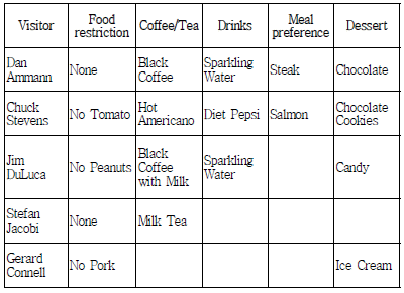
- Dan Ammann has no food restriction.
- Chuck Stevens doesn't want to have meal with tomato.
- Jim DuLuca may have peanut allergy.
- You can buy Gerard Connell pork steak.
(정답률: 56%)
54. Which of the following is the Most appropriate expression for the blank?
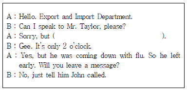
- he comes back.
- he went home already.
- he didn’t come today.
- his line is busy.
(정답률: 50%)
55. Choose one which is NOT true to the given text.
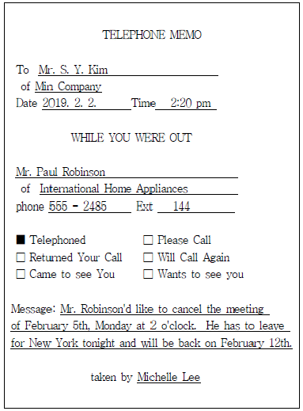
- Mr. Robinson left this message to Ms. Michelle Lee.
- Mr. Robinson called Mr. Kim to cancel the meeting of February 5th.
- Ms. Michelle Lee is working for International Home Appliances.
- This message should be given to Mr. S. Y. Kim as soon as possible.
(정답률: 46%)
56. What is the MOST proper expression for the underlined part?
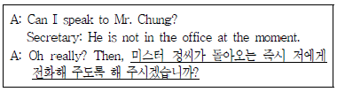
- Could you let him to call me back as soon as he gets in?
- Could you have him call me back as soon as he will get in?
- Could you have him call me back as soon as he gets in?
- Could you let him calling me back as soon as he will get in?
(정답률: 27%)
57. Which of the following is the MOST appropriate expression for the blank?
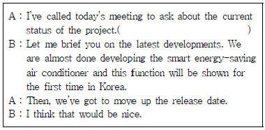
- Could you tell me where you got that information?
- How is the project going?
- Could you make two copies of this document?
- Let's call it a day.
(정답률: 51%)
58. Which is most INCORRECT about the schedule?
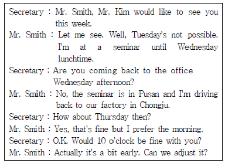
- On Wednesday morning, Mr. Smith is in Pusan.
- Mr. Smith visits Chongju in the afternoon of Wednesday.
- Mr. Smith wants to have an appointment before 10 o'clock.
- Mr. Smith and Mr. Kim will meet on Thursday.
(정답률: 50%)
59. According to the followings, which one is NOT true?
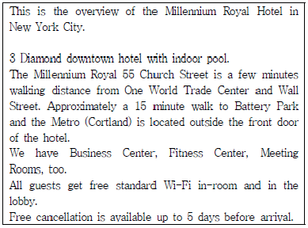
- You can cancel your reservation up to 5 days before your arrival without charge.
- The hotel is located close to the Wall Street.
- The hotel is located in the downtown of New York City.
- There is not a Metro station near the hotel.
(정답률: 50%)
60. Belows are in the envelope. Which of the followings is INCORRECT?
- 항공 우편 - Via Air Mail
- 속달 우편 - Express Delivery
- 반송 주소 - Inside Address
- 긴급 –Urgent
(정답률: 55%)
4과목: 사무정보관리
61. 다음 중 띄어쓰기가 잘못된 것을 모두 고르시오.
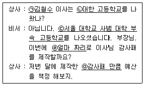
- ㉡, ㉢
- ㉢, ㉣, ㉤
- ㉣, ㉤
- ㉠, ㉢, ㉣
(정답률: 39%)
62. 다음 우편서비스 중에서 기본적으로 등기 취급되는 것에 해당하지 않은 것은?
- 국내특급우편
- 민원우편
- e-그린우편
- 배달증명
(정답률: 50%)
63. ㈜한국기업에서 아래와 같이 결재가 처리되었다. 다음 중 아래의 결재 처리에 대한 설명이 가장 적절한 것은?
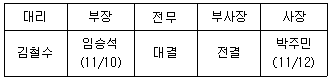
- 이 문서의 기안자는 임승석 부장이다.
- 이 문서는 박주민 사장이 결재한 문서이다.
- 이 문서는 대리-부장-전무 순서로 결재된 문서이다.
- 이 문서는 부사장이 사장 대신에 결재한 문서이다.
(정답률: 33%)
64. 다음은 각종 인사장 및 감사장에 대한 설명이다. 내용이 잘못 기술된 것은?
- 협조에 대한 감사장 작성 시에는 앞으로 성원을 부탁하는 내용과 함께 상대의 발전을 기원하며 축원하는 내용을 덧붙 여 기재하는 것이 좋다.
- 신년 인사장은 작성 목적에 따라 자유롭게 내용을 구성할 수 있으며, 새해를 상징하는 이미지 등을 삽입하여 개성 있게 작성할 수 있다.
- 취임 인사장은 새로운 취임자가 취임에 대한 감사의 인사와 포부를 전하기 위한 것으로 전임 직무자들이 이룩한 성과에 대한 언급과 함께 앞으로의 포부와 계획 등을 밝힌다.
- 축하에 대한 감사장 작성시에는 내용을 일반화하고 정형화하여 감사를 표하고자 하는 사람의 상황과 성격, 감정 등과 무관하게 격식을 차려 정중하게 작성하여야 한다.
(정답률: 55%)
65. 다음 중 문서 정리의 기본 원칙으로 볼 수 없는 것은?
- 문서 정리 방법에 대한 회사 내부의 규정을 제정하여 표준화한다.
- 시간이 지나서 쓸모없게 된 문서는 정해진 규칙에 의하여 폐기하는 것을 제도화한다.
- 자료는 필요한 사람에게만 배포하고 원본이 명확하게 정리되어 있다면 불필요한 복사본은 가지고 있지 않도록 한다.
- 문서 보관 서류함이나 서랍의 위치는 보안을 위하여 소재를 명시하지 않도록 한다.
(정답률: 53%)
66. 다음 중 전자문서에 대한 설명이 적절하지 못한 것을 모두 고르시오.
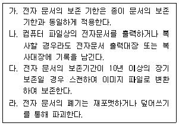
- 가, 라
- 나, 다, 라
- 다
- 가, 나, 다, 라
(정답률: 29%)
67. 다음 중 유통대상에 의해 분류한 경우 문서의 성격이 다른 하나는?
- 보고서
- 사내 장표
- 견적서
- 회의록
(정답률: 37%)
68. 다음은 김미소 비서가 상사의 지시로 마케팅 팀장들에게 보내는 이메일이다. 다음 중 수정이 가장 적절하지 않은 것은?
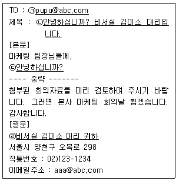
- ㉠ : 박철수 팀장님<pupu@abc.com>
- ㉡ : 마케팅 팀장 회의 자료 전달
- ㉢ : 이메일에는 인사말을 생략한다.
- ㉣ : 비서실 김미소 대리 배상
(정답률: 57%)
69. 다음 중 문서 관리에 관한 설명으로 가장 적절하지 않은 것은?
- 분산식 보관방식을 채택하고 있어서 작년도 부서에서 작업했던 문서를 부서내 보관소에 보관했다.
- 전자결재시스템을 이용하고 있어서 기안문을 따로 보관하지 않아도 서버에 보관되어 있다.
- 보관 문서철 명칭을 정할 때 ○○관계철과 같은 포괄적인 표현이 바람직하다.
- 보관문서를 보존서고로 옮기는 절차 및 행위를 이관이라고 한다.
(정답률: 40%)
70. 다음중 전자문서 관리를 가장 부적절하고 비효율적으로 처리한 비서는?
- 박비서는 ‘마케팅촉진전략회의_발표자료_20180920’으로 저장한 전자문서 파일명을 ‘발표자료’로 변경했다.
- 김비서는 전자 문서를 분류해서 보관할 때 폴더 안에 하위폴더를 생성해 구분을 명확히 해서 저장했다.
- 최비서는 업무가 진행 중인 전자 문서의 경우 문서의 진행처리 단계에 따라서 문서의 파일명을 변경하거나 변경된 폴더로 이동시켜서 정리, 보관하였다.
- 고비서는 장기 보존할 전자문서를 PDF/A 형식으로 저장하였다.
(정답률: 57%)
71. 다음 중 아래 신문기사에 대한 내용으로 가장 연관이 적은 것은?
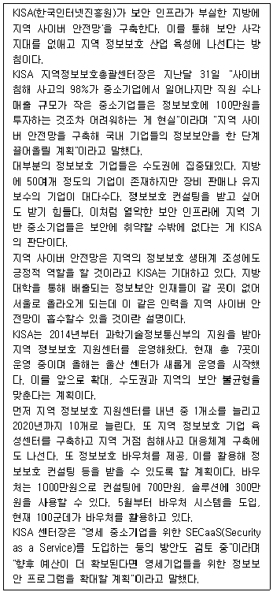
- 지방 중소 기업들은 금전적인 문제와 정보보호 기업들의 수도권 집중화로 인해 보안 사각지대에 놓여있다.
- 현재 지방에는 총 10개의 정보보호 지원센터가 운영 중에 있다.
- 영세 중소기업을 위한 ‘서비스로서의 보안’ 도입 방안을 계획 중에 있다.
- 지방에 있는 중소기업 보안을 위해서는 보다 저렴하고 손쉽게 보안 서비스를 이용할 수 있는 방안이 도입되어야 한다.
(정답률: 59%)
72. 우리나라의 국가 인터넷 주소 관리기관인 한국 인터넷 진흥원이 제공하는 인터넷 주소의 등록 및 할당 정보를 확인하는 서비스로서, IP주소로 도메인 네임이나 해당 주소 소유자를 확인하거나, 도메인 네임으로 해당 도메인 소유자를 찾을 수 있는 서비스는 무엇인가?
- DOMAIN FINDER
- IP TRACER
- WHOIS
- ADDRESS BOOK
(정답률: 30%)
73. 투자회사에 근무하는 이비서는 상사인 김부사장으로부터 몇몇 상장기업에 관해 아래 표와 같은 정보를 정리해 보고하라는 지시를 받았다. 이 경우 가장 최신의 공신력있는 정보를 일괄적으로 수집할 수 있는 곳은?
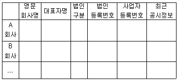
- 각 회사의 홈페이지
- 국가통계포털 KOSIS
- 연합뉴스 기업 정보
- 금융감독원 DART
(정답률: 49%)
74. 다음은 2017년 8월 신문에 기재된 기사에 포함된 경상수지 추이 그래프이다. 이 그래프를 통해 유추할 수 있는 기사 내용으로 가장 적절한 것은?
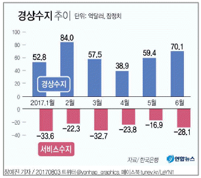
- 2017년 1월 서비스수지 적자폭은 전년 동월 대비 증가하였다.
- 2017년 상반기 중 전년 동월대비 감소율이 가장 낮은 달은 5월이다.
- 2017년 상반기 경상수지가 흑자이기 때문에 서비스 수지가 적자를 면치 못하였다.
- 2017년 상반기의 서비스수지의 적자로 인해서 경상수지 흑자폭이 축소되었다.
(정답률: 27%)
75. 정보 수집 및 문서에 자료인용시 유의해야 할 내용으로 가장 적절하지 않은 것은?
- 자료 수집의 단계에서부터 인용을 대비해 서지 사항을 정확히 기재한다.
- 인터넷 자료의 경우 웹 페이지의 주소(URL)만 정확히 기록해 두면 된다.
- 인용을 할 때 각주를 활용하여 참고문헌에서 인용의 정도와 인용처리 방식을 분명히 해 주는 것이 좋다.
- 직접 인용할 만큼의 가치를 갖는 내용은 원문의 표현을 그대로 옮겨두고 쪽수까지 정확히 기록해 두는 습관이 필요하다.
(정답률: 58%)
76. 인터넷 및 정보 관리와 관련된 다음의 용어 중 설명이 잘못된 것은?
- 사이버불링(Cyber Bullying): 이메일, 휴대전화, SNS 등 디지털 서비스를 활용하여 악성댓글이나 굴욕스러운 사진을 올림으로써 이루어지는 개인에 대한 괴롭힘 현상
- 빅데이터(Big Data): 기존 데이터보다 너무 방대하여 기존의 방법으로 도구나 수집/저장/분석이 어려운 정형 및 비정형 데이터
- 큐레이션 서비스(Curation Service): 정보과잉시대에 의미있는 정보를 찾아내 더욱 가치 있게 제시해 주는 것으로서 개인의 취향에 맞는 정보를 취합하고, 선별하여 콘텐츠를 제공해주는 서비스
- 핑크메일(Pink Mail): 사내 활성화된 온라인 의사소통을 통하여 동료들에게 동기부여를 고취하는 일련의 메시지
(정답률: 50%)
77. 자동차 부품회사에 근무하는 김비서는 상사에게 정보 보안에 대해 더 철저하게 신경쓰라는 지시를 받았다. 김비서의 정보 보안 업무 중 가장 적절하지 못했던 것은?
- 상사의 일정과 관련하여 공개 및 공유할 수 있는 범위를 상사와 명확히 의논하여 업무에 반영하였다.
- 상사의 중요 서류나 문서를 팩스로 송신할 경우, 문서를 받을 상대방에게 먼저 전화를 걸어 팩스를 보낼 것이라고 알려주었다.
- 상사와 친분이 있는 고객이 상사의 정보를 요청할 경우라도 반드시 원칙대로 상사와 의논 후 지시에 따라 행동하였다.
- 처리가 완료되지 못한 문서 작업을 집으로 가져가 작업하기 위해 대외비문서반출 목록에 기입한 후 반출하였다.
(정답률: 59%)
78. 사무정보기기 및 사무용 SW를 다음과 같이 사용하고 있다. 이 중 가장 적절하게 활용을 하고 있는 비서는?
- 김비서는 상사가 180도 펼쳐지는 상태의 제본을 선호하기 때문에 열제본기를 주로 사용한다.
- 백비서는 상사의 컬러로 된 PPT 자료가 잘 구현되도록 실물화상기를 셋팅했다.
- 황비서는 각종 자료를 한곳에서 정리하고 관리하며, 공유도하기 위해서 에버노트 앱을 이용하였다.
- 윤비서는 상사의 업무일정 관리를 원활하게 하기 위해서 리멤버 앱을 사용하였다.
(정답률: 33%)
79. 다음은 사무정보기기의 구분에 따른 종류를 나열한 것이다. 구분에 부적합한 사무기기가 포함된 것은?
- 정보 처리 기기 : PC, 노트북, 스마트폰
- 정보 전송 기기 : 전화기, 스캐너, 팩스, 화상 회의 시스템
- 정보 저장 기기 : 외장하드, USB, CD-ROM
- 통신 서비스 : LAN. VAN, 인터넷, 인트라넷
(정답률: 47%)
80. 다음의 상황을 대비하기 위하여 김비서가 이행할 수 있는 방법으로 가장 부적절한 것은?
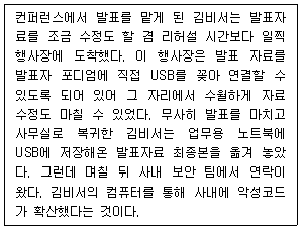
- 외부 컴퓨터에서 사용했던 이동식 저장매체를 사무실에서 사용할 경우 바이러스 검사를 실시한다.
- 이동식 저장매체의 자동 실행 기능을 비활성화하여 자동으로 USB가 시스템에 연결되는 것을 예방한다.
- 편리한 USB 사용을 위하여 USB 자동실행 기능을 평상시에 켜 둔다.
- 노트북의 USB 드라이브 자동 검사 기능을 활성화해 둔다.
(정답률: 62%)